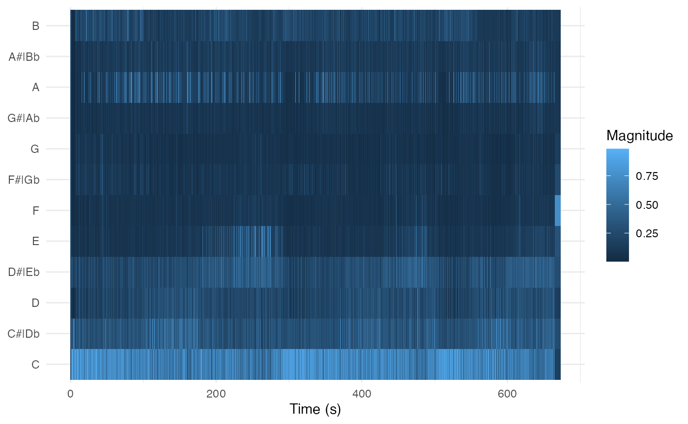
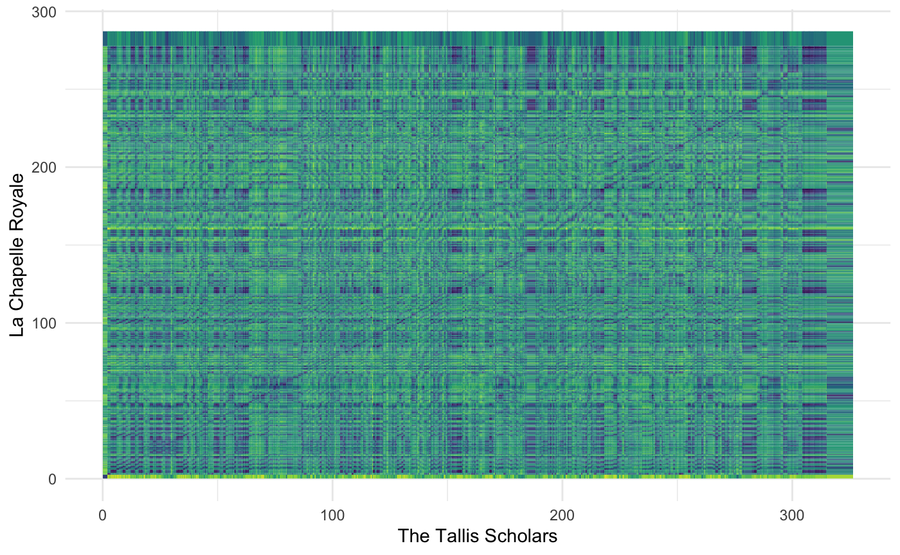

compmus-w08.RmdWelcome to your first R Markdown file of Computational Musicology! RStudio has made a helpful cheat sheet you can use to learn more about all of the features of R Markdown.
We begin by loading the libraries we need for analysis.
## ── Attaching packages ─────────────────────────────────────── tidyverse 1.3.2 ──
## ✔ ggplot2 3.4.1 ✔ purrr 1.0.1
## ✔ tibble 3.1.8 ✔ dplyr 1.1.0
## ✔ tidyr 1.3.0 ✔ stringr 1.5.0
## ✔ readr 2.1.4 ✔ forcats 1.0.0
## ── Conflicts ────────────────────────────────────────── tidyverse_conflicts() ──
## ✖ dplyr::filter() masks stats::filter()
## ✖ dplyr::lag() masks stats::lag()In order for the code below to run, it is also necessary to set up
Spotify login credentials for spotifyr.
One of the helper functions this week,
get_tidy_audio_analysis, does just what it says, for one
track at a time. Spotify’s audio analysis is thorough, and basic documentation
is available for everything in it.
Let’s pull down the analysis of a recording of Steve Reich’s ‘Music
for Pieces of Wood’ (well worth a listen if you don’t know the piece).
For reasons that will become clearer next week, one needs to
select the desired field out of the analysis – in this
case, segments – and then unnest it.
Spotify segments have a lot of information inside them, but this
week, we’ll focus just on start, duration, and
pitches: the three tools we need to make a chromagram.
wood <-
get_tidy_audio_analysis('6IQILcYkN2S2eSu5IHoPEH') %>%
select(segments) %>% unnest(segments) %>%
select(start, duration, pitches)The key to making a chromogram is geom_tile. It is
powerful but has it’s wrinkles. Much of the code in the next block is
code that you will simply need to copy every time you use it; next week
we’ll develop a better understanding of what is going on.
First, we want to choose a normalisation for the chroma vectors:
Manhattan, Euclidean, or Chebyshev, using the new helper function
compmus_normalise (with a little help from the
map function, which we’ll see more of next week). The
name of the normalisation is the only thing in that line of code that
you need to change.
Then we need to convert the data to so-called long format: a new row
for each pitch class. There is a helper function
compmus_gather_chroma to do that.
Finally we can plot, but beware that ggplot centres each tile on the x or y coordinate instead of using the left corner. Use the duration to make a correction for it.
wood %>%
mutate(pitches = map(pitches, compmus_normalise, 'euclidean')) %>%
compmus_gather_chroma %>%
ggplot(
aes(
x = start + duration / 2,
width = duration,
y = pitch_class,
fill = value)) +
geom_tile() +
labs(x = 'Time (s)', y = NULL, fill = 'Magnitude') +
theme_minimal()
In order to take the step from chromagrams to dynamic time warping, we need to choose an appropriate distance. Distance metrics usually form conceptual pairs with norms, although there are no standard distance metrics to use after Chebyshev normalisation.
Both Aitchison and angular distances have solid theoretical underpinning for chroma vectors. The Manhattan (a.k.a. total variation distance in this case) and the cosine pseudo-distance are faster to compute and are often good enough. The cosine distance, in particular, is extremely popular in practice.
| Domain | Normalisation | Distance |
|---|---|---|
| Non-negative (e.g., chroma) | Manhattan | Manhattan |
| Aitchison | ||
| Euclidean | cosine | |
| angular | ||
| Chebyshev | [none] |
Let’s look at seven recordings of Josquin des Prez’s ‘Ave Maria’. The comment lines break them down into three pitch levels.
tallis <-
get_tidy_audio_analysis('2J3Mmybwue0jyQ0UVMYurH') %>%
select(segments) %>% unnest(segments) %>%
select(start, duration, pitches)
chapelle <-
get_tidy_audio_analysis('4ccw2IcnFt1Jv9LqQCOYDi') %>%
select(segments) %>% unnest(segments) %>%
select(start, duration, pitches)
cambridge <-
get_tidy_audio_analysis('54cAT1TCFaZbLOB2i1y61h') %>%
select(segments) %>% unnest(segments) %>%
select(start, duration, pitches)
###
oxford <-
get_tidy_audio_analysis('5QyUsMY40MQ1VebZXSaonU') %>%
select(segments) %>% unnest(segments) %>%
select(start, duration, pitches)
chanticleer <-
get_tidy_audio_analysis('1bocG1N8LM7MSgj9T1n3XH') %>%
select(segments) %>% unnest(segments) %>%
select(start, duration, pitches)
###
hilliard <-
get_tidy_audio_analysis('2rXEyq50luqaFNC9DkcU6k') %>%
select(segments) %>% unnest(segments) %>%
select(start, duration, pitches)
gabrieli <-
get_tidy_audio_analysis('4NnJ4Jes8a8mQUfXhwuITx') %>%
select(segments) %>% unnest(segments) %>%
select(start, duration, pitches)The compmus_long_distance helper function gets
everything ready for geom_tile. It takes two data frames
(don’t forget to normalise the chroma vectors), the feature we want to
compute distance over (pitches in our case), and any of the
distance measures in the table above. It returns a long table ready for
plotting, with xstart, xduration,
ystart, and yduration.
compmus_long_distance(
tallis %>% mutate(pitches = map(pitches, compmus_normalise, 'chebyshev')),
chapelle %>% mutate(pitches = map(pitches, compmus_normalise, 'chebyshev')),
feature = pitches,
method = 'euclidean') %>%
ggplot(
aes(
x = xstart + xduration / 2,
width = xduration,
y = ystart + yduration / 2,
height = yduration,
fill = d)) +
geom_tile() +
scale_fill_continuous(type = 'viridis', guide = 'none') +
labs(x = 'The Tallis Scholars', y = 'La Chapelle Royale') +
theme_minimal()
What’s going on here? Try different distance metrics to see what works best.
How do the patterns change if you compare recordings at two different pitch levels?
Are there any recordings in your corpus for which this technique could work? Do you think it would work with cover songs?
If you want to compute actual alignments, look into the R dtw package.